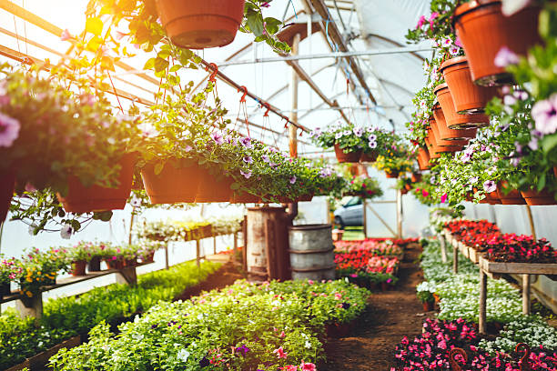
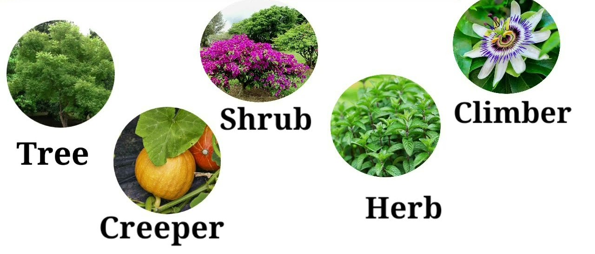

Information About Plant Nursery
The plants are started with seedlings or seeds and are grown to a size that is desirable to farmers, landscapers, retail stores, and home gardeners. The plants are used in landscapes, lawns, vegetable gardens, and other indoor and outdoor plant and flower aesthetics.
Plant nurseries range in size from private backyard nurseries to large plots of land and can specialize in fruits and vegetables or exotic trees and shrubs. The types of plants and trees that are grown in the nursery will depend on the market demand and region.
Once grown, plant nurseries sell many types of plants and trees to wholesale and retail nurseries. These nurseries are where customers can purchase a wide range of plants or young trees for farms, gardens, and more. These garden centers are also the place to go when you want information or advice about plants, soil, fertilizers, garden tools, and more.


Various Types Of Plants
Plants are a group of diverse, living organisms that are found almost everywhere on earth. Some grow on land, while others thrive on water. They can survive and reproduce in moderate to extreme climatic conditions depending upon the plant species.
There are different ways of classifying plants. The most common classification is based on their growth parameters, such as height, longevity, and growth habits.
About Us
A nursery is a place where
plants are propagated and grown to a desired
age for transplanting in main fields or for sale.
A nursery is the place where young plants
are raised and taken care of until they reach the
right size for transplanting.
It includes retail nurseries which sell
their plants to the general public, while the
wholesale nurseries which sell the plant only
to businesses such as other nurseries and to
commercial gardens, and private nurseries
which supply the needs of institutions or private
estates.Vegetable growers, floriculturists,
foresters, orchardists and various plant growers
largely depends on the availability of nursery
plants in nearby market but such plants may
be raised without much care and less attention
given towards genetic purity. The main aim of
the nursery owner is to earn profit and hence
the plant material raised is mostly of average
quality. Many growers and producers have
gained awareness about quality and it has
opened the field of nursery management for
profit and production of quality plants.
Nursery management includes raising and
selling of nursery plants which is an art and a
skill. It needs experience, practice, foresight
and technical knowledge about nurseries.
Nurseries may supply plants for raising
gardens, for planting in agriculture fields,for forest purposes and for conservational
biology.